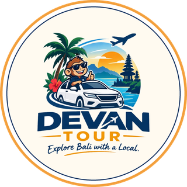
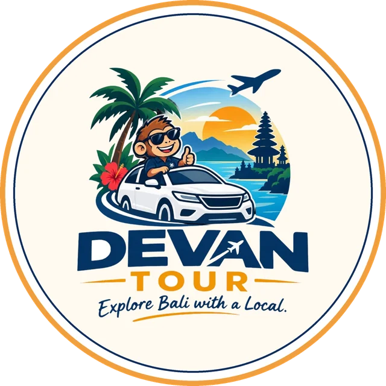

⏱ Seharian
⏱ Seharian
Tur Kintamani
Desa kerajinan, pura air suci Tirta Empul, kebun kopi, dan panorama Gunung serta Danau Batur.
Harga segera hadirDETAIL



Jelajahi Bali bersama sahabat lokal — bukan sekadar sopir. Kami tahu jalan ke sudut tersembunyi, jam terbaik ke pura, dan warung yang benar-benar enak.
Tur SeharianTur Setengah HariSunrise BaturNusa Penida Antar Jemput Bandara
Antar Jemput Bandara Sewa Mobil + Sopir
Sewa Mobil + SopirContoh rute dapat disesuaikan dengan keinginan Anda.
⏱ Seharian
Desa kerajinan, pura air suci Tirta Empul, kebun kopi, dan panorama Gunung serta Danau Batur.
 ⏱ Full day (8–10 jam)
⏱ Full day (8–10 jam)
Rafting, ATV, ayunan Alas Harum, Bali Bird & Reptile Park, dan Pura Tirta Empul dalam satu hari.
⏱ Setengah hari (siang–malam)
Pantai, patung ikonik, dan Tari Kecak di tebing Uluwatu saat senja.
⏱ Seharian
Tebing dan pantai ikonik di sisi barat Nusa Penida, dengan kapal cepat dari Sanur.
 ⏱ Seharian
⏱ Seharian
Pura kerajaan Taman Ayun, sawah Jatiluwih, dan senja di Pura Tanah Lot.
⏱ Seharian
Udara sejuk pegunungan, Pura Ulun Danu Beratan, dan Kebun Raya Bedugul.
Kami lahir dan besar di Bali — tumbuh bersama upacara odalan, alunan gamelan, dan kehidupan banjar. Bersama DEVAN TOUR, Anda ditemani sahabat lokal yang siap berbagi cerita di balik setiap tempat.

Budaya, adat, dan bahasa Bali adalah keseharian kami — bukan hafalan dari brosur.
Pantai, pura, sawah, atau kuliner — rute disusun sesuai minat Anda.
Kapan pura masih sepi, kapan cahaya terbaik untuk foto, dan jalur yang menghindari macet.
Semua biaya dijelaskan sejak awal, tanpa biaya tersembunyi.
Dijemput dan diantar kembali ke hotel atau vila dengan mobil ber-AC.
Tanya apa saja, dari tempat makan hingga tata krama di pura.

Bagi kami, Bali adalah rumah. Sejak kecil kami ikut menghaturkan canang, menari saat odalan, dan ngayah bersama warga banjar. Dari situlah kami belajar bahwa setiap pura, sawah, dan tarian punya makna.
“Kami ingin Anda pulang bukan hanya dengan foto, tetapi dengan cerita — dan rasa ingin kembali lagi ke Bali.”
Layanan tambahan bersama sopir lokal kami.
Berangkat dini hari menuju Kintamani untuk menyaksikan matahari terbit di atas Gunung dan Danau Batur. Detail menyusul.
Penjemputan dan pengantaran dari/ke Bandara I Gusti Ngurah Rai (DPS). Detail menyusul.
Mobil ber-AC dengan sopir lokal untuk rute pilihan Anda sendiri. Detail menyusul.
Musim kemarau (sekitar April–Oktober) umumnya paling cerah. Perhatikan tanggal Nyepi, saat seluruh Bali hening 24 jam.
Kenakan kamen/sarung dan selendang, berpakaian sopan, dan jangan melangkahi sesajen (canang).
Rupiah (IDR). Tukar uang di money changer resmi; pembayaran QRIS banyak diterima.
Jelajahi Bali bersama pemandu lokal asli Bali. Slot tur kami terbatas setiap harinya — pesan lebih awal agar tanggal pilihanmu aman.
Tanya jadwal dan paket lewat WhatsApp: +62 858-6963-3160
Chat WhatsApp Lihat Paket Tur